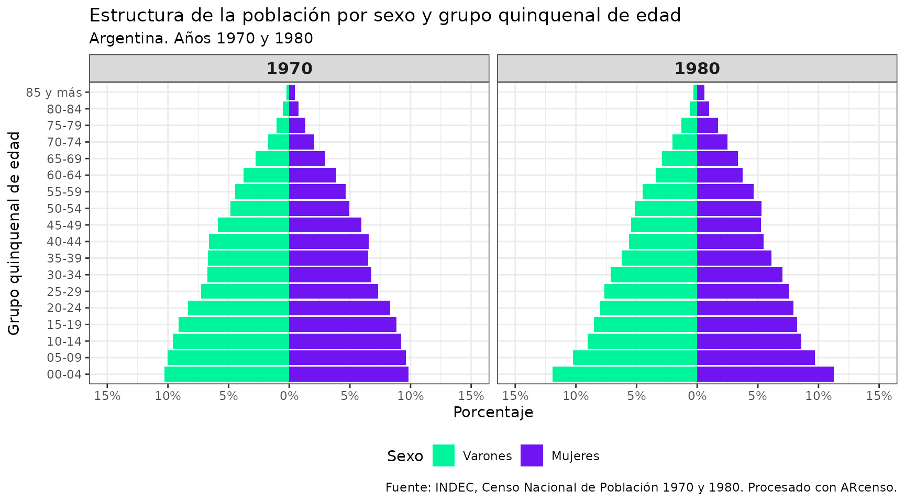
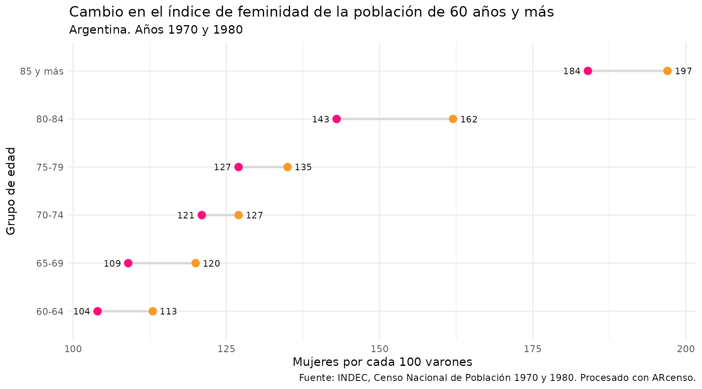

Construyendo indicadores demográficos
Source:vignettes/indicadores_demograficos.Rmd
indicadores_demograficos.RmdLos censos de población son fuentes fundamentales para comprender la composición y las dinámicas demográficas de una sociedad. Sin embargo, trabajar con estos datos suele implicar varios pasos previos: identificar qué información existe, descargarla, organizarla y prepararla para el análisis.
En este tutorial mostramos cómo utilizar ARcenso para acceder de forma simple y reproducible a datos censales históricos de Argentina. Los ejemplos utilizan datos de los censos de 1970 y 1980 para calcular algunos indicadores demográficos.
¿Cómo empezar?
Para reproducir este análisis, es necesario contar con un entorno de trabajo en R con los paquetes requeridos. ARcenso puede instalarse desde GitHub y los demás paquetes desde CRAN (este paso puede omitirse si los paquetes ya están instalados).
# Si no tenés remotes
install.packages("remotes")
# Instalar ARcenso desde GitHub
remotes::install_github("SoyAndrea/arcenso")
# Instalar paquetes necesarios desde CRAN
install.packages(c("dplyr", "tidyr", "ggplot2", "gt"))Cargamos los paquetes necesarios para trabajar con los datos censales y construir indicadores para el análisis:
Acceso a datos censales
Para comenzar, exploramos y accedemos a datos censales históricos de Argentina. El paquete permite consultar información según el año, el tema y la geografía de interés.
Antes de descargar los datos, podemos verificar qué información está
disponible utilizando la función check_repository(). Esta
función permite explorar los cuadros disponibles a partir de distintos
criterios de búsqueda.
El argumento topic define el tipo de información a
consultar (por ejemplo, estructura de la población), mientras que
geo_code identifica el dominio geográfico de interés
utilizando los códigos geográficos oficiales definidos por el Instituto
Nacional de Estadística y Censos (INDEC) de Argentina.
Si no conocés los valores disponibles para estos argumentos, podés
explorarlos directamente desde la consola. El objeto
geo_metadata permite identificar las geografías y sus
códigos, mientras que census_metadata contiene información
sobre los temas y cuadros disponibles en el paquete.
En este ejemplo, trabajamos con datos de estructura de la población
(topic = "estructura") para el total del país
(geo_code = "00").
check_repository(topic = "estructura", geo_code = "00")
#> # A tibble: 4 × 3
#> id_cuadro anio titulo
#> <chr> <dbl> <chr>
#> 1 1970_00_estructura_01 1970 Cuadro 1. Total del país. Población total, por gr…
#> 2 1980_00_estructura_01 1980 Cuadro G3. Centros urbanos según tamaño y poblaci…
#> 3 1980_00_estructura_02 1980 Cuadro G1. Total del país. Población total según …
#> 4 1980_00_estructura_03 1980 Cuadro G2. Total del país. Población según sexo y…El resultado muestra los años disponibles para esa combinación de tema y geografía, junto con los identificadores de los cuadros (IDs) y sus títulos. En este tutorial utilizamos los cuadros
1970_00_estructura_01y1980_00_estructura_03, correspondientes a tabulados sobre la población total del país según sexo y grupo de edad.
Preparación de los datos
Una vez identificados los cuadros de interés, utilizamos
get_census() para importar los datos a R a partir de sus
identificadores.
Dado que las estructuras de ambos cuadros no son idénticas, realizamos algunas transformaciones para armonizar las variables y construir una base comparable entre censos. En particular, recodificamos las categorías etarias en grupos quinquenales y agregamos una columna que identifica el año censal. ### Censo 1970
poblacion_1970 <- get_census(id = "1970_00_estructura_01")
pob_1970 <- poblacion_1970 |>
filter(sexo != "Total") |>
mutate(
censo = 1970,
grupo_de_edad = case_when(
grupo_de_edad == "0-4" ~ "00-04",
grupo_de_edad == "5-9" ~ "05-09",
TRUE ~ grupo_de_edad
)
) |>
rename(grupo_edad = grupo_de_edad) |>
select(censo, sexo, grupo_edad, poblacion)En el caso del censo de 1970, la información ya se encuentra agrupada en grupos quinquenales de edad, por lo que solo es necesario ajustar el formato de algunas etiquetas y conservar las variables relevantes para el análisis.
Censo 1980
poblacion_1980 <- get_census(id = "1980_00_estructura_03")
pob_1980 <- poblacion_1980 |>
filter(
urbano_rural == "Total",
sexo != "Total",
edad != "Total"
) |>
mutate(
censo = 1980,
edad_num = ifelse(edad == "85 y más", 85, as.numeric(edad)),
grupo_edad = case_when(
edad_num %in% c(0:4) ~ "00-04",
edad_num %in% c(5:9) ~ "05-09",
edad_num %in% c(10:14) ~ "10-14",
edad_num %in% c(15:19) ~ "15-19",
edad_num %in% c(20:24) ~ "20-24",
edad_num %in% c(25:29) ~ "25-29",
edad_num %in% c(30:34) ~ "30-34",
edad_num %in% c(35:39) ~ "35-39",
edad_num %in% c(40:44) ~ "40-44",
edad_num %in% c(45:49) ~ "45-49",
edad_num %in% c(50:54) ~ "50-54",
edad_num %in% c(55:59) ~ "55-59",
edad_num %in% c(60:64) ~ "60-64",
edad_num %in% c(65:69) ~ "65-69",
edad_num %in% c(70:74) ~ "70-74",
edad_num %in% c(75:79) ~ "75-79",
edad_num %in% c(80:84) ~ "80-84",
TRUE ~ "85 y más"
)
) |>
select(-edad, -urbano_rural, -edad_num) |>
select(censo, sexo, grupo_edad, poblacion)El cuadro de 1980, en cambio, presenta la edad en valores simples y añade información adicional que no es relevante para este análisis, por lo que es necesario seleccionar las categorías de interés y construir los grupos quinquenales de edad (intervalos de 5 años) para hacerlos comparables con los de 1970.
Construcción de la base integrada
Una vez procesados ambos cuadros, unimos la información en una única tabla y definimos el formato final de las variables para facilitar la construcción de visualizaciones e indicadores demográficos.
poblacion <- bind_rows(pob_1970, pob_1980) |>
mutate(
poblacion = as.numeric(poblacion),
sexo = factor(sexo, levels = c("Varones", "Mujeres")),
grupo_edad = factor(
grupo_edad,
levels = c(
"00-04", "05-09", "10-14", "15-19", "20-24",
"25-29", "30-34", "35-39", "40-44", "45-49",
"50-54", "55-59", "60-64", "65-69", "70-74",
"75-79", "80-84", "85 y más"))
)Estructura de la población
A partir de esta base integrada, exploramos algunos cambios en la estructura de la población entre 1970 y 1980 mediante visualizaciones e indicadores demográficos.
head(poblacion)
#> # A tibble: 6 × 4
#> censo sexo grupo_edad poblacion
#> <dbl> <fct> <fct> <dbl>
#> 1 1970 Varones 00-04 1196950
#> 2 1970 Mujeres 00-04 1158350
#> 3 1970 Varones 05-09 1163050
#> 4 1970 Mujeres 05-09 1133950
#> 5 1970 Varones 10-14 1114300
#> 6 1970 Mujeres 10-14 1086850Pirámide poblacional
Calculamos la distribución relativa de la población dentro de cada censo para comparar la estructura poblacional entre 1970 y 1980 independientemente del tamaño total de la población.
Para más detalles sobre la construcción de pirámides poblacionales en R, visita el tutorial Visualización demográfica: pirámides poblacionales.
# Base para la pirámide poblacional
piramide <- poblacion |>
group_by(censo, sexo) |>
mutate(
poblacion_rel = if_else(
sexo == "Varones",
-poblacion / sum(poblacion),
poblacion / sum(poblacion))) |>
ungroup()
# Pirámide comparativa
piramide |>
ggplot(aes(x = poblacion_rel, y = grupo_edad, fill = sexo)) +
geom_col() +
facet_wrap(~ censo, ncol = 2) +
scale_fill_manual(values = c("#00f59b", "#7014f2")) +
scale_x_continuous(
labels = function(x) paste0(abs(round(x * 100, 1)), "%"),
limits = c(-0.15, 0.15),
breaks = seq(-0.15, 0.15, by = 0.05)) +
labs(
title = "Estructura de la población por sexo y grupo quinquenal de edad",
subtitle = "Argentina. Años 1970 y 1980",
x = "Porcentaje",
y = "Grupo quinquenal de edad",
caption = "Fuente: INDEC, Censo Nacional de Población 1970 y 1980. Procesado con ARcenso.",
fill = "Sexo") +
theme_bw() +
theme(
legend.position = "bottom",
strip.text = element_text(face = "bold", size = 12) )
Estructura de la población por sexo y grupos quinquenales de edad. Argentina, 1970 y 1980.
En ambos censos se observa una estructura poblacional joven, con una alta concentración en los primeros grupos de edad. No obstante, hacia 1980 comienza a evidenciarse un ligero desplazamiento hacia edades adultas, indicando un incipiente proceso de envejecimiento de la población.
Construcción de indicadores demográficos
Si bien la pirámide poblacional permite una lectura general de la estructura de la población, los indicadores demográficos ofrecen medidas sintéticas que permiten cuantificar y comparar estos patrones de manera más precisa.
A continuación presentamos algunos ejemplos.
Índice de envejecimiento
Compara la cantidad de personas mayores (65 años y más) con la población más joven (0 a 14 años). Permite ver de forma simple si la población tiene más peso en las edades jóvenes o en las edades más avanzadas.
envejecimiento <- poblacion |>
group_by(censo) |>
summarise(
poblacion_0a14 = sum(poblacion[grupo_edad %in% c("00-04", "05-09", "10-14")]),
poblacion_65ymas = sum(poblacion[grupo_edad %in% c("65-69", "70-74", "75-79", "80-84", "85 y más")]),
indice = round(poblacion_65ymas / poblacion_0a14 * 100, 0))
gt(envejecimiento) |>
tab_header(
title = "Comparación del índice de envejecimiento",
subtitle = "Argentina. Años 1970 y 1980"
) |>
tab_spanner(
label = "Población",
columns = c(poblacion_0a14, poblacion_65ymas)
) |>
fmt_number(
columns = c(poblacion_0a14, poblacion_65ymas),
decimals = 0,
sep_mark = "."
) |>
cols_label(
poblacion_0a14 = "0 a 14 años",
poblacion_65ymas = "65 años y más",
indice = "Índice"
) |>
tab_source_note(
source_note =
md("**Fuente:** elaboración propia en base a datos de INDEC (Censos Nacionales de Población 1970 y 1980).")) |>
tab_options(
table.background.color = "white"
)| Comparación del índice de envejecimiento | |||
| Argentina. Años 1970 y 1980 | |||
| censo |
Población
|
Índice | |
|---|---|---|---|
| 0 a 14 años | 65 años y más | ||
| 1970 | 6.853.450 | 1.631.400 | 24 |
| 1980 | 8.480.768 | 2.290.564 | 27 |
| Fuente: elaboración propia en base a datos de INDEC (Censos Nacionales de Población 1970 y 1980). | |||
El aumento del índice de envejecimiento refleja un cambio en la estructura etaria entre 1970 y 1980, lo que indica un mayor peso relativo de la población de 65 años y más en relación con la población joven, es decir, una población relativamente más envejecida.
Índice de feminidad
Este indicador muestra cuántas mujeres hay por cada 100 varones en un grupo especifico de población. En este caso, lo analizamos en edades mayores a 60 años, donde suelen aparecer diferencias más marcadas entre hombres y mujeres.
feminidad <- poblacion |>
filter(
grupo_edad %in% c("60-64", "65-69", "70-74", "75-79", "80-84", "85 y más")
) |>
group_by(censo, grupo_edad, sexo) |>
summarise(poblacion = sum(poblacion), .groups = "drop") |>
pivot_wider(names_from = sexo, values_from = poblacion) |>
mutate(
indice_feminidad = round(Mujeres / Varones * 100, 0)
) |>
select(-Varones, -Mujeres)
feminidad |>
pivot_wider(
names_from = censo,
values_from = indice_feminidad,
names_prefix = "censo_"
) |>
ggplot(aes(y = grupo_edad)) +
geom_segment(
aes(x = censo_1970, xend = censo_1980, yend = grupo_edad),
color = "grey85",
linewidth = 1) +
geom_point(aes(x = censo_1970), color = "#ff0f7b", size = 3) +
geom_point(aes(x = censo_1980), color = "#f89b29", size = 3) +
geom_text(aes(x = censo_1970, label = censo_1970), hjust = 1.4, size = 3) +
geom_text(aes(x = censo_1980, label = censo_1980), hjust = -0.4, size = 3) +
labs(
x = "Mujeres por cada 100 varones",
y = "Grupo de edad",
title = "Cambio en el índice de feminidad de la población de 60 años y más",
subtitle = "Argentina. Años 1970 y 1980",
caption = "Fuente: INDEC, Censo Nacional de Población 1970 y 1980. Procesado con ARcenso."
) +
theme_minimal()
Cambio en el índice de feminidad de la población de 60 años y más, por grupo de edad. Argentina, 1970 y 1980.
El índice de feminidad muestra una mayor presencia de mujeres en las edades más avanzadas, diferencia que se acentúa entre 1970 y 1980 en todos los grupos de edad analizados, lo que refleja patrones de mayor supervivencia femenina.
Índice de Whipple
Hasta acá utilizamos los datos censales para describir características de la población. Sin embargo, los censos también permiten evaluar la calidad de la información relevada.
El índice de Whipple es un indicador clásico utilizado para medir la llamada atracción de dígitos: la tendencia a declarar edades terminadas en 0 o 5, especialmente cuando la edad exacta no se recuerda con precisión.
El indicador se calcula sobre la población de 23 a 62 años, comparando la cantidad de personas que declaran edades múltiplo de cinco (25, 30, 35, …, 60) con la distribución esperada bajo una declaración uniforme. Un valor de 100 representa una declaración exacta, mientras que valores más altos indican una mayor concentración en esos dígitos.
Naciones Unidas propone una escala de interpretación para este indicador: valores hasta 105 corresponden a datos muy precisos, entre 105 y 124 indican una precisión aceptable y valores iguales o superiores a 125 reflejan deficiencias en la declaración de la edad.
edad_simple_1980 <- get_census(id = "1980_00_estructura_03") |>
filter(
urbano_rural == "Total",
sexo == "Total",
edad != "Total",
edad != "85 y más") |>
mutate(
edad = as.numeric(edad),
poblacion = as.numeric(poblacion))
whipple <- edad_simple_1980 |>
filter(edad >= 23, edad <= 62) |>
summarise(
pob_multiplos_5 = sum(poblacion[edad %in% seq(25, 60, by = 5)]),
pob_total = sum(poblacion),
indice_whipple = round(pob_multiplos_5 / (pob_total / 5) * 100, 1) )
gt(whipple) |>
tab_header(
title = "Índice de Whipple",
subtitle = "Argentina. Censo 1980 (población de 23 a 62 años)") |>
fmt_number(
columns = c(pob_multiplos_5, pob_total),
decimals = 0,
sep_mark = ".") |>
cols_label(
pob_multiplos_5 = "Población en edades múltiplo de 5",
pob_total = "Población total (23 a 62 años)",
indice_whipple = "Índice") |>
tab_source_note(
source_note =
md("**Fuente:** elaboración propia en base a datos de INDEC (Censo Nacional de Población 1980). Escala de referencia: <105 muy preciso, 105–124 aceptable, ≥125 deficiente.")) |>
tab_options(
table.background.color = "white"
)| Índice de Whipple | ||
| Argentina. Censo 1980 (población de 23 a 62 años) | ||
| Población en edades múltiplo de 5 | Población total (23 a 62 años) | Índice |
|---|---|---|
| 2.801.322 | 13.134.697 | 106.6 |
| Fuente: elaboración propia en base a datos de INDEC (Censo Nacional de Población 1980). Escala de referencia: <105 muy preciso, 105–124 aceptable, ≥125 deficiente. | ||
El índice arroja un valor de 106,6, que en la escala de Naciones Unidas se ubica en la franja de declaración relativamente precisa (entre 105 y 109). Esto significa que existe una leve atracción por las edades terminadas en 0 y 5 pero es acotado y no compromete la calidad general del dato.
El resultado refleja un operativo censal con buena cobertura y un nivel de declaración de la edad razonablemente confiable, lo que da respaldo a los análisis demograficos presentados en las secciones anteriores.
Consideraciones finales
En este tutorial construimos un flujo de trabajo reproducible para acceder, preparar y analizar datos censales históricos en R.
A partir de los censos de 1970 y 1980 generamos una base comparable entre distintos momentos en el tiempo, utilizada para construir visualizaciones e indicadores demográficos.
Los ejemplos presentados muestran cómo los datos censales permiten explorar cambios en la estructura de la población y evaluar aspectos de la calidad de la información relevada.
Comunidad
Citación: Si utilizas ARcenso en investigaciones, publicaciones o proyectos, te invitamos a citar el paquete
citation("arcenso").Feedback: Las sugerencias, reportes de errores y contribuciones son bienvenidas. Para más información sobre cómo colaborar con el proyecto, consulta nuestra guía de contribución.
Referencias
- Naciones Unidas (1955). Manual II: Methods of Appraisal of Quality of Basic Data for Population Estimates. Population Studies No. 23, ST/SOA/Series A/23. Department of Economic and Social Affairs, Population Branch. Disponible en un.org.